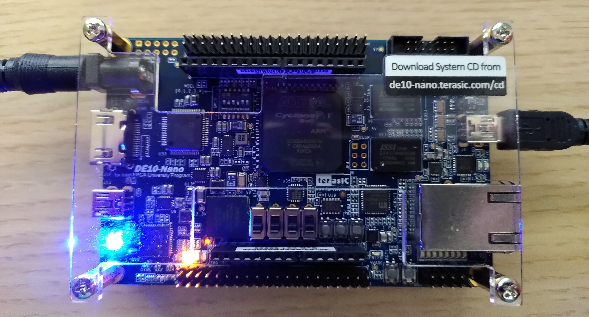

Heute möchte ich Ihnen zeigen, wie Sie eine Verbindung zum DE10-nano-Board herstellen, dem Nachfolger des DE0-nano-Boards. Es ist etwas größer, kostet fast 300 Dollar, unterstützt aber auch sofort einsatzbereites Linux. Auf der SD-Karte ist Angstrom Linux installiert. Um das Board über die UART-Schnittstelle anzuschließen, schalten Sie das Board mit dem Steckernetzteil ein, legen Sie die SD-Karte ein, um das Linux-Booten zu starten, und schließen Sie schließlich das Micro-USB-Kabel (wie unten gezeigt) an den PC an.

Gehen Sie dann zur Konsole und geben Sie (als root) Folgendes ein
# dmesg | grep FTDIWenn der Treiber idealerweise bereits installiert ist, sollten Sie Folgendes zurückerhalten:
[ 6352.585966] usb 3-4: Hersteller: FTDI
[ 6352.648922] usbserial: USB Serial support registered for FTDI USB Serial Device
[ 6352.648961] ftdi_sio 3-4:1.0: FTDI USB Serial Device converter detected
[ 6352.656051] usb 3-4: FTDI USB Serial Device converter now attached to ttyUSB0Jetzt müssen Sie nur noch die Benutzerberechtigungen ändern, wieder als root (dies müssen Sie nach jedem Booten/jeder Verbindung tun):
# chmod a+rw /dev/ttyUSB0Schließlich müssen Sie noch putty installieren, was unter Linux genauso einfach ist wie unter Windows:
# apt-get install -y puttyÖffnen Sie dann putty
$ puttyGeben Sie das Gerät /dev/ttyUSB0 ein, wie in der ftdi-Ausgabe oben gezeigt, geben Sie die Baudrate von 115200 ein und speichern Sie die Konfiguration.

Drücken Sie auf „Öffnen“ und im Idealfall sollte eine Verbindung zum Board hergestellt werden. Wenn keine Warnung angezeigt wird, drücken Sie die Eingabetaste und Sie erhalten das folgende Bild:

Geben Sie root als Benutzernamen und als Passwort ein.
Fortsetzung folgt…